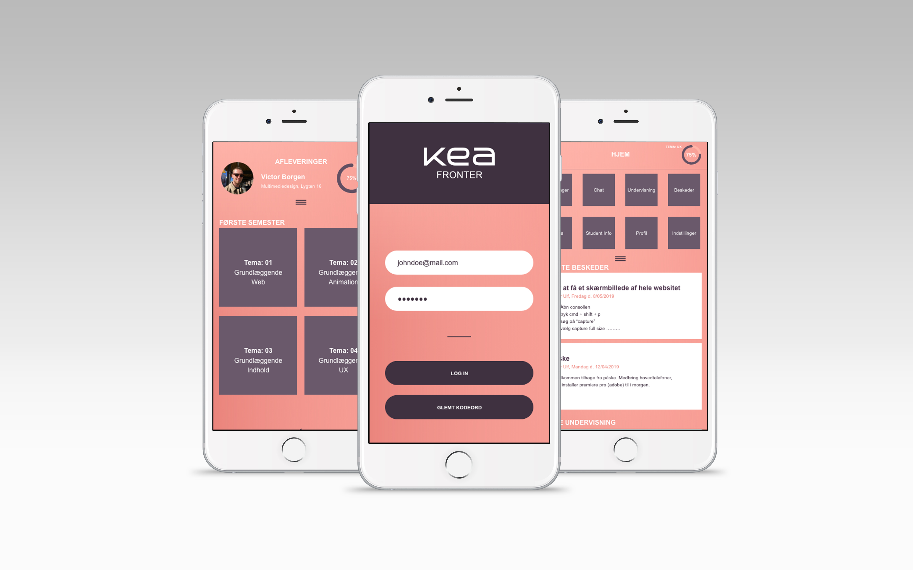

04.01.01
Design sprint
04.01.01 var en uges designsprint, ideen med et designsprint er at udvikle samt teste en prototype på relativ kort tid.
Design sprintet er utroligt effektivt og kræver en uges ryddet kalender. I dette design sprint tager blev der taget udgangspunkt i den interne kommunikations platform: Fronter. Mange studerende mener at Fronter er problematisk, da det er uorganiseret, forvirrende og har lange vanskelige stier til diverse mapper.
Test fasen i design-sprintet er en essentiel fase, uden testene kan vi ikke vide om vores prototype virker. I dette tilfælde blev der brugt tænke højt test, hvor brugeren prøver så vidt muligt at fortælle sine tanker i mens de prøver produktet for første gang. Testene giver et hurtigt indblik i hvad der kan optimeres, ændres og give en bedre brugeroplevelse. Jeg lærte af mine test, at min prototype ved første øjekast var lidt uoverskueligt, men føltes mere organiseret efter længere tids brugen. Farverne i min prototype fik god feedback, og et stramt farveudvalg gjorde det nemmere at navigere rundt på siden.
Link til opgave →03.02.07 Still-foto
03.02.07 Still-foto
03.02.07 Still-foto